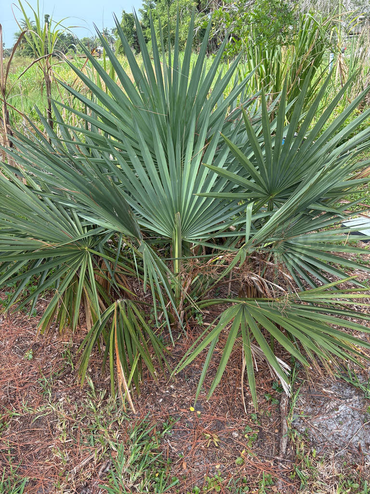

- The trunk is almost entirely underground. What looks like a ground-level cluster of leaves is actually the crown of a palm whose stem has been growing downward — or just barely at soil level — for decades. The plant can bloom and fruit without ever showing a visible trunk above ground.
- Dwarf Palmetto is notably resistant to lethal bronzing disease, the phytoplasma infection that has been devastating Sabal palmetto populations across Florida. In a landscape where its taller cousin is under serious threat, this species carries a meaningful ecological advantage.
- It is the most cold-tolerant palm in the Sabal genus — established plants can survive temperatures down to around 5 degrees F, which puts it in a league with very few palms anywhere in North America.
- The leaf petioles have no teeth or spines along their edges — a quick way to tell it apart from the superficially similar saw palmetto, which bristles with sharp marginal serrations.
Dwarf Palmetto is native to the southeastern and south-central United States, ranging from central Florida north along the Atlantic coast to North Carolina and west along the Gulf coast to central Texas, Arkansas, and into northeastern Mexico.
Florida sits at the heart of its Gulf-coast range, where it grows in wet flatwoods, hammocks, floodplain forests, and the marshy margins between upland and wetland communities.
In Florida, it tends to follow river systems and coastal wetlands rather than dry sandy uplands. Its association with moist, often calcareous soils — including marl derived from shell limestone — reflects the kind of rich bottomland it favors across its range. It is genuinely native here and has been part of Florida's plant communities long before European settlement.
- Despite its common name, Dwarf Palmetto is not always small. Most plants stay low and trunkless for their entire lives, but older specimens in favorable conditions can produce a short aboveground trunk and reach close to ten feet. Botanists once described the trunked form as a separate species, Sabal deeringiana; it is now understood to be simply an older growth stage of the same plant.
- The fan-shaped fronds are costapalmate — structurally similar to a true fan palm, but with a stiff central rib extending from the petiole partway into the blade. Each frond can reach four to five feet across and is composed of 16 to 40 pale or blue-green blade segments. That blue-green cast, combined with smooth, spineless petioles, helps identify the species at a glance.
- The Houma people of Louisiana recorded a specific medicinal use: juice pressed from the small roots was used as a remedy for eye irritation. Across the broader Southeast, related Sabal palms supplied thatching, fiber, and shelter materials to Indigenous communities for centuries — practical value that the botanical record often undersells.
The fruit is the main event for wildlife. Small, hard, glossy black drupes ripen in late summer to fall, and at least nine bird species have been recorded feeding on them — along with opossums, raccoons, and other small mammals. The dense, low crown also provides reliable ground-level cover and nesting habitat in areas where taller structure is sparse.
The flowers attract bees and other pollinating insects. The Monk Skipper (Asbolis capucinus) uses the entire Sabal genus as a caterpillar host, and the ground-level fronds of Dwarf Palmetto offer something its towering cousin cannot: larvae can reach the foliage without ever climbing a tall trunk.
Most records are tied to cabbage palm, but the accessible, wide fronds of this low-growing species make it a particularly practical nursery plant for this large, dark skipper wherever it occurs in South and Central Florida.
The Lady Bird Johnson Wildflower Center also lists the species as a nectar source for insects and a nesting site for birds — a full-service plant for the local fauna.
Propagation is by seed. The flowers are bisexual — each flower carries both male and female parts — so any individual can set fruit without a separate pollen donor. Established plants also self-sow, and seeds germinate best in a moist to muddy seedbed.
Small, creamy white, and numerous, borne on upright branching stalks that extend above the leaves — a distinctive feature, since most palms carry their flower stalks within or below the canopy. Flowering occurs from late spring through midsummer.
Round, fleshy drupes less than half an inch in diameter, ripening from green through purple to glossy black from late summer into fall. Each drupe contains a single seed. Birds and mammals consume them readily.
Costapalmate fan fronds, typically four to five feet across, composed of 16 to 40 stiff, pale to blue-green segments. A central rib (costa) extends partway into the blade from the petiole, giving the frond a slight three-dimensional bow. Petioles are smooth — no teeth or spines along the margins, distinguishing this species from saw palmetto at a glance. Leaf edges can be sharp enough to scratch.
The trunk is characteristically subterranean — growing downward or horizontally just below the surface — but this is an adaptation, not an absolute limit. Decades-old specimens in rich, high-moisture soils can eventually push an aboveground stem to several feet in height.
That trunked form was once classified as a separate species, Sabal deeringiana, before botanists recognized it as simply a very old individual of the same plant.
The silhouette is the first clue: a bold, low crown of large blue-green fans rising directly from the ground with no visible trunk. Look at the petioles — they are smooth all the way to the leaf blade, with no serrated teeth, which is the quickest way to rule out saw palmetto. When the plant is in bloom, watch for the flower stalks rising above the frond tips, which is unusual among palms.
In late summer and fall, look for clusters of small glossy black drupes on the hanging fruiting stalks.
The leaf edges can scratch — worth keeping in mind when brushing past the fronds. The small black fruits are completely non-toxic to humans, dogs, and cats, but 'safe' is not the same as 'edible': the drupes are mostly hard seed with a thin, dry skin and offer nothing culinary. Leave them for the birds, which is exactly what they are for.
Dwarf Palmetto is notably resistant to lethal bronzing disease (caused by the phytoplasma Candidatus Phytoplasma aculeata), which has been killing Sabal palmetto trees across Florida in large numbers. For gardeners and land managers looking to maintain a native palm presence in affected areas, S. minor is a species worth knowing.
In the nursery trade, Dwarf Palmetto is available but grown in small quantities by a limited number of nurseries, as UF/IFAS notes. Sourcing from a Florida native-plant nursery is the most reliable way to obtain a true specimen.

- © Randall Carter (CC-BY-NC), via iNaturalist